Know exactly where every server, license and spare part is, how it got there and why it moved. The complete, audit-ready inventory for datacenters and Cloud teams.
Racks · Warehouses · Life cycle · Audit reports · English / Français
Most datacenter teams track equipment in Excel files that nobody trusts. When an auditor asks “where is this server, who moved it and why?”, the answer takes hours. Datacenter Inventory turns that question into a 10-second search, with an exportable Excel or PDF proof.
Datacenter → Hall → Room → Rack → RU, plus a warehouse per datacenter. Racks are organised by lane (A/B/C/D) with 48 RU.
Receive, put in service, relocate, return to warehouse, send to another site, decommission. Each move records the reason (Replaced, Obsolete, Deprecated, Upgraded, Faulty...), the request or mail reference, a comment and who did it.
Servers and switches, but also licenses and activation keys (with expiry alerts) and virtual or logical assets, all in one inventory.
Paste one or many terms (service tag, license key, model, rack, date...). Exact or partial match, any or all terms, searched in every field, with a Found / Not found coverage table.
Detailed, summary and audit reports, with optional movement history sheet. Export is restricted to Manager and Administrator groups.
No dependency on Odoo Inventory. Your datacenter equipment never mixes with sellable goods or accounting stock.
Every user can switch language from the Language menu. French is activated automatically on first use.
Chatter and tracked fields on every item, and an immutable movement log for audits and incident reviews.
Equipment by status (In Warehouse, In Service, In Transit, Decommissioned), by datacenter, cluster, brand and product type, plus live rack usage. Every indicator is clickable and opens the matching list.
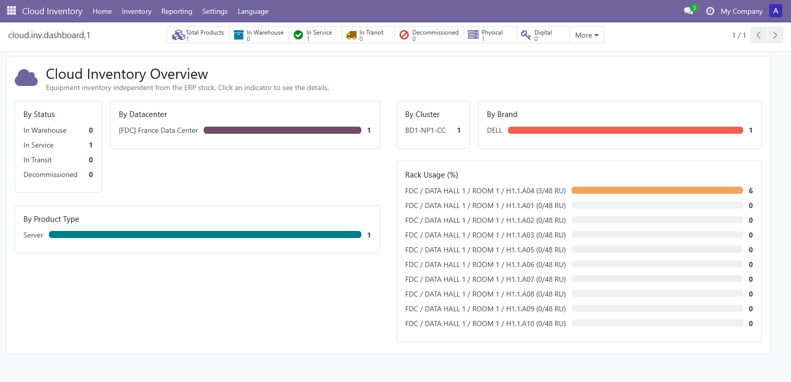
Dedicated indicators for logical items, licenses expiring within 30 days and expired licenses, so renewals are never missed.
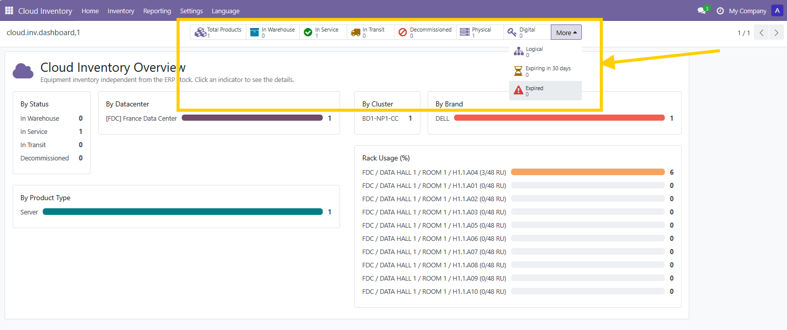
Specifications (CPU, RAM, storage, NIC, HBA), life-cycle buttons (Relocate, Return to Warehouse, Send to Another Site, Decommission), the status bar, the movement counter and the complete chatter history of every change.
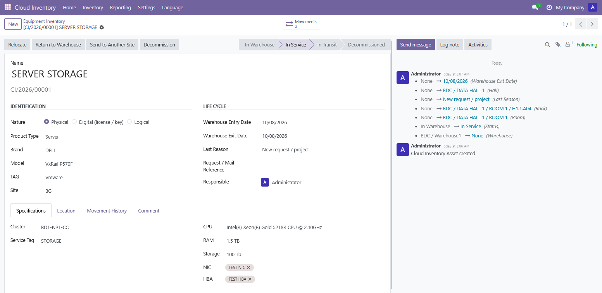
Equipment, Movements, Warehouses and Rack Usage in one menu. No more "in stock / out of stock" for racked servers: the vocabulary is the one your operations team and your auditors use.
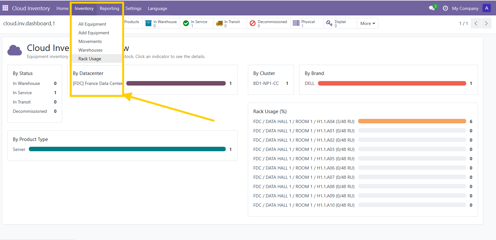
Brand, model, name, cluster, CPU, RAM, storage, NIC, HBA, service tag, TAG, rack, RU, site, dates and responsible person. Choose the columns you need, filter, group and search instantly.
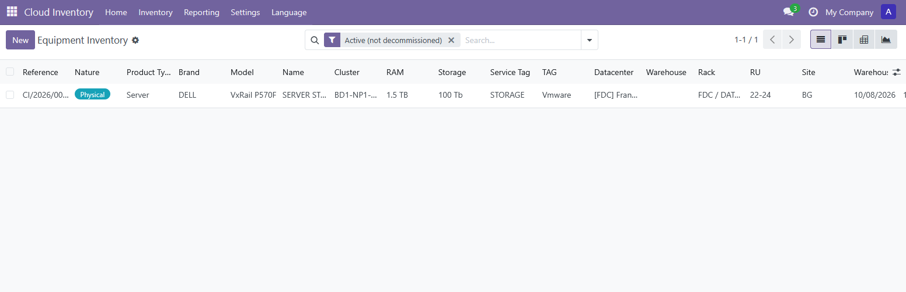
Select equipment, then export to Excel or PDF straight from the list, or change status and location in bulk. Reserved to your managers and administrators.
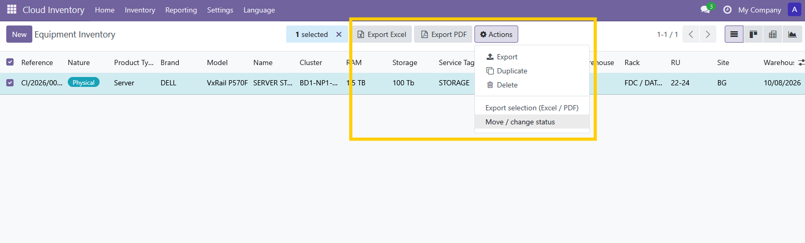
Model any number of datacenters, each with its own halls, rooms and warehouse.
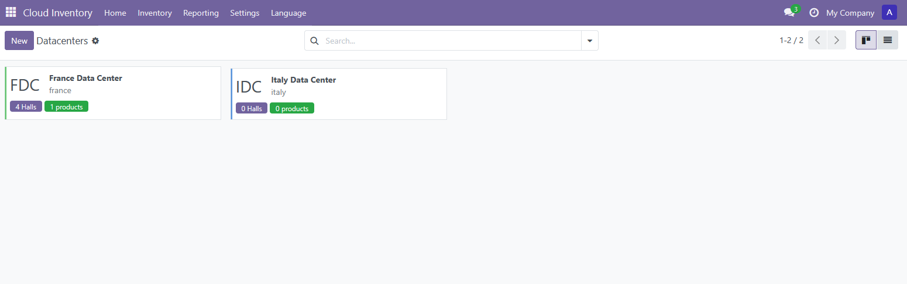
Add, rename or archive datacenters and halls yourself. No developer needed.
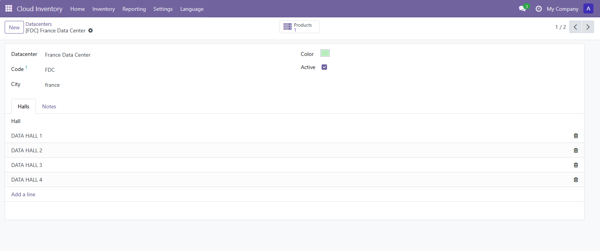
Browse rooms by hall and datacenter, and see the racks of each room in one click.
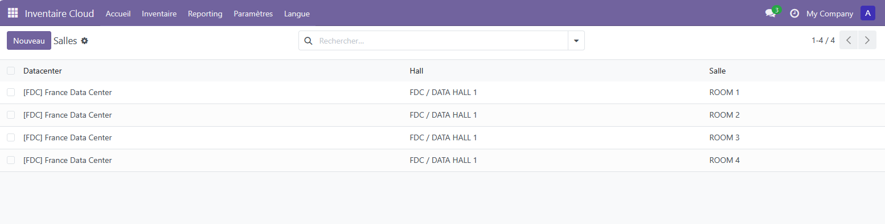
Choose a prefix, the lanes (A, B, C, D), the number of racks per lane and the rack height (48 RU by default). The module creates H1.1.A01 ... H1.1.D11 for you.
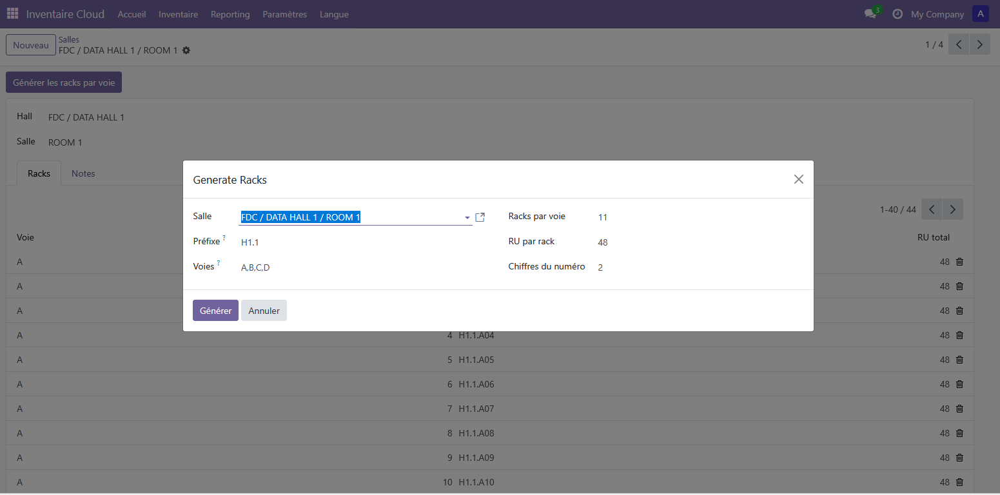
Racks grouped by room and lane, with total, used and free RU and an occupation bar. The module refuses two devices on the same RU.
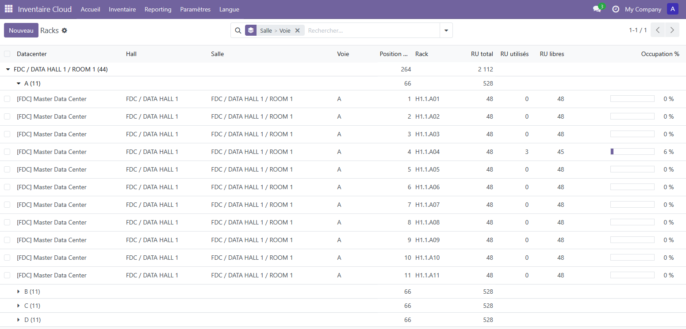
Analysis (pivot / graph), Excel and PDF exports, the Audit Search and ready-made reports for each status, licenses and logical items.
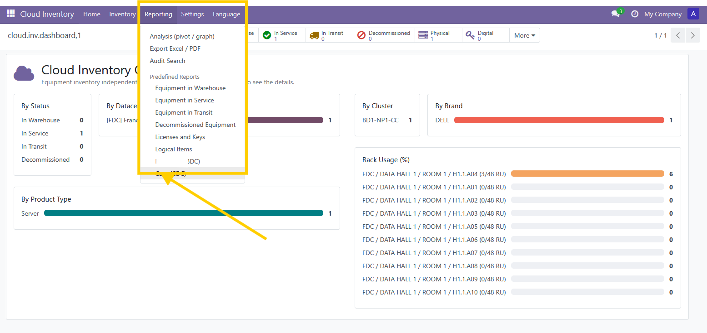
Product types, brands, models, clusters, CPU, RAM, storage, TAG, sites, NIC and HBA are all managed from Settings. The module adapts to your hardware, not the other way round.
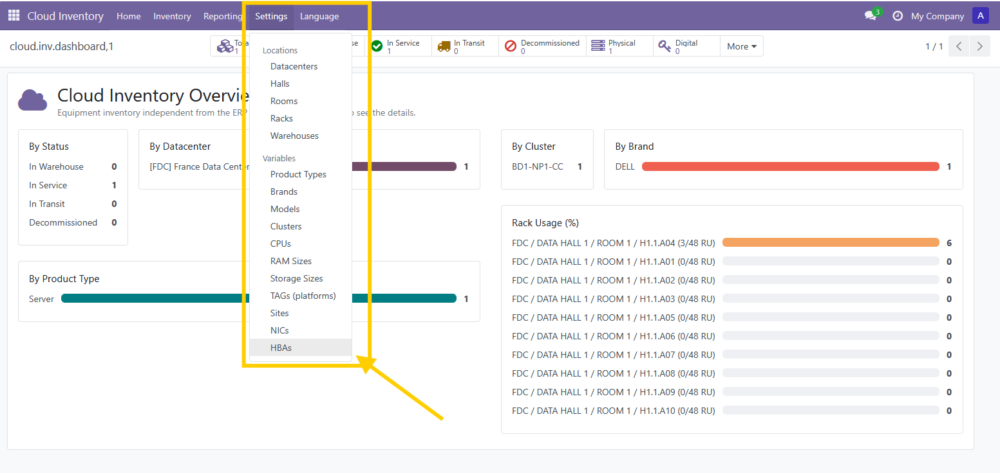
Know the free RU in every rack before you plan the next deployment.
Several datacenters, halls and warehouses, one clean inventory with full movement traceability.
Answer any audit request with an Excel or PDF report built in seconds.
Requires the Python package xlsxwriter (included with standard Odoo installations).
Every day without a reliable inventory is a day of lost time, risky audits and hidden costs. Get Datacenter Inventory now and have your racks, warehouse and audit reports under control from the first day.
Questions, a demo or custom development? misterinfo.ma
Developed by Abdechakour Hrouchan · misterinfo.ma